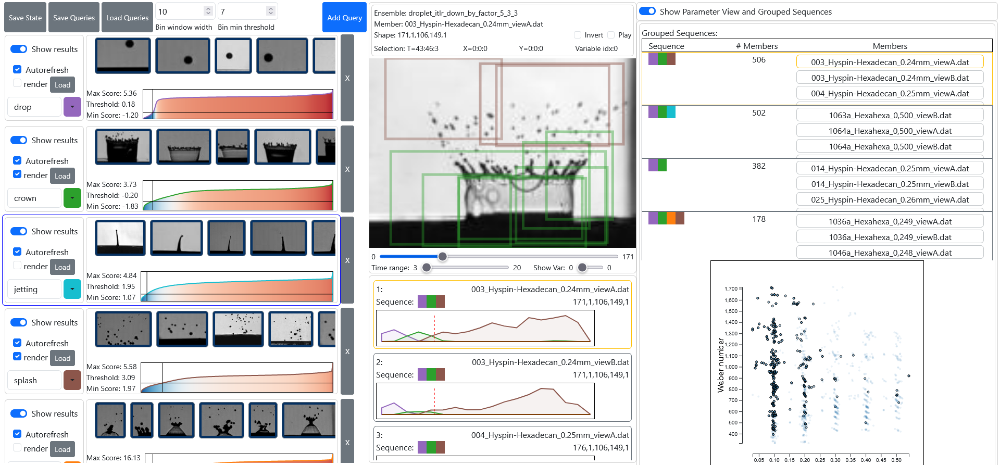

QVis: Query-based Visual Analysis of Multiscale Patterns in Spatiotemporal Ensembles
(opens in new tab)
Venue. TVCG (2025)
Materials.
DOI(opens in new tab)
PDF(opens in new tab)
Abstract. Understanding how dynamic patterns vary across large spatiotemporal ensembles is essential in many scientific domains. In fluid dynamics, for instance, researchers analyze how splash patterns in droplet impact experiments change with physical parameters such as fluid type or impact velocity. These experiments produce large volumes of data where patterns differ in size, shape, and duration, making manual analysis tedious and error-prone. Recently, interactive visualization approaches have been developed to assist analysis using learned similarity models for pattern-based querying. However, they assume fixed size inputs and only support single-pattern queries, thus limiting their effectiveness for multiscale, multi-pattern analysis and exploration of ensembles. In this paper, we present a visual anal ysis approach for the interactive exploration of spatiotemporal ensembles through multiscale pattern querying. Our approach extends an existing similarity model to support variable-sized patterns, allowing users to define queries by selecting examples directly on visualized data. Coordinated views enable interactive querying, comparison, and analysis of pattern occurrences and relate pattern occurrences to ensemble parameters. A guidance mechanism supports the user in finding underexplored regions. We demonstrate the utility of our approach on synthetic and real-world datasets. Domain expert feedback confirms that the approach is intuitive, easy to use, and effective for revealing parameter-pattern relationships.
Link to this page: